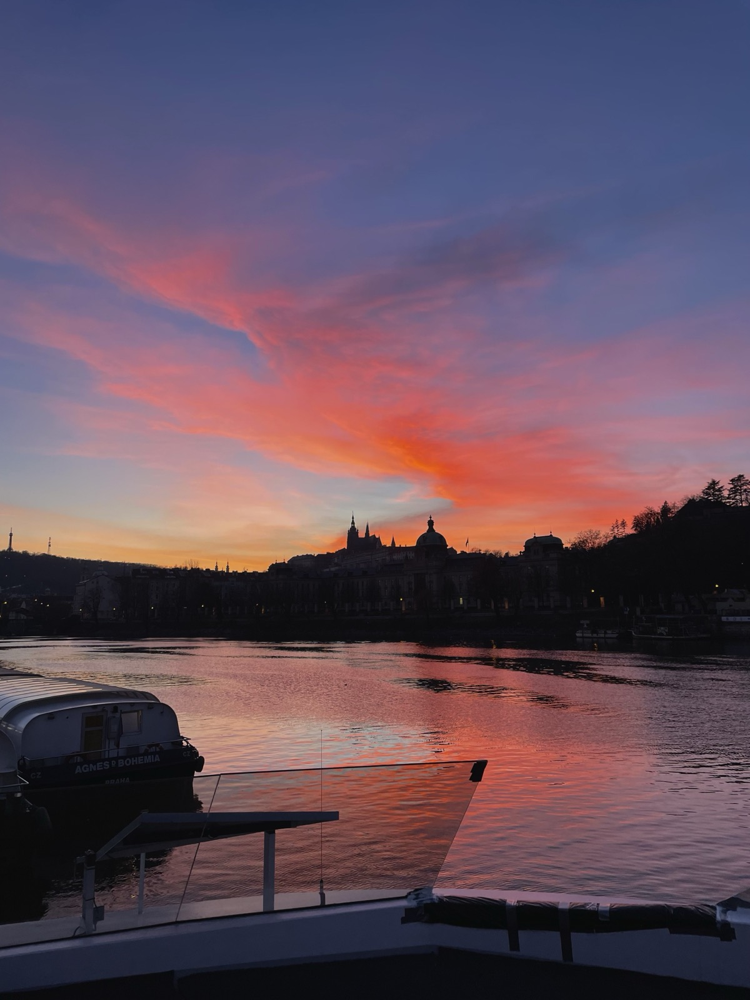
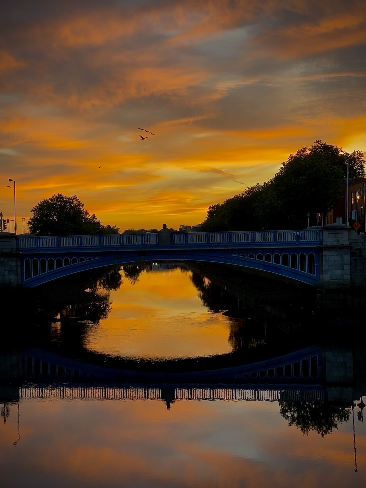
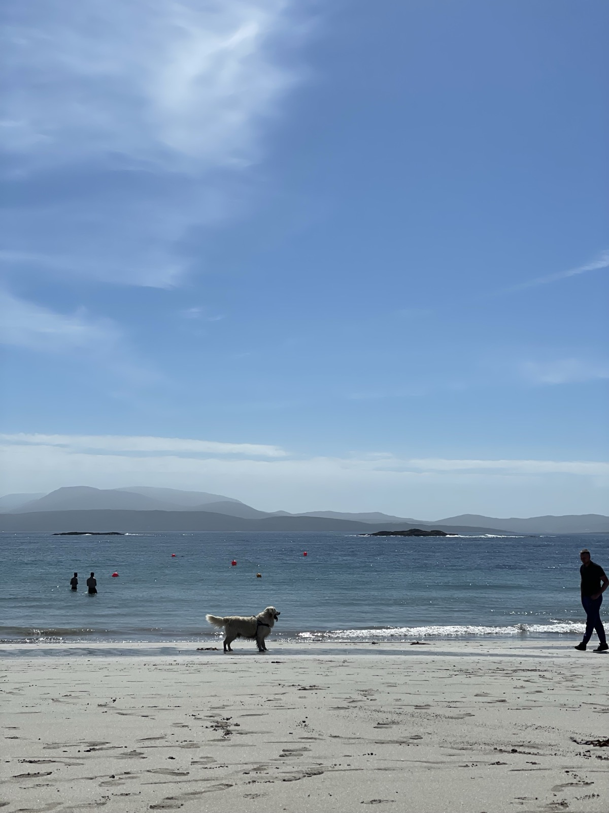

Where the noise gets to zero and answers begin to speak.
I am a water person. Water brings peace and stillness. Just a sight of it is enough to make me happy, whether it is an open sea, a quiet lake, a river, rainfall, or a sunrise over the horizon.
Snapshots on the Water
Moments of stillness around Ireland


Kayaking & Irish Waters
I own a kayak and spend time on the water whenever I can. I have travelled extensively around Ireland, developing a special appreciation for the waters, harbors, and quiet shores around Cork. Being on the water restores balance and clarity.
Vipassana Practice & Trust
Practicing silent Vipassana meditation taught me observation without reaction. I have completed multiple ten day and six day residential courses, and served as a course volunteer. Later, I was appointed to the Irish Vipassana Trust committee, contributing across finance, planning, and technology.
Food Rescue & Community
Believing in direct local action, I served as a Food Waste Hero with OLIO, collecting surplus groceries and redistributing them to neighbors in Dublin. I also assisted ground operations for the Dublin St Patrick's Day Parade and have travelled to 20 countries.
Connect with Sudhanshu
Whether you want to discuss data strategy, digital tools, board governance, or simply connect over tea or a paddle on the water, I am always open to thoughtful conversations.